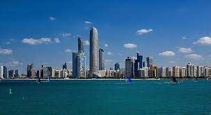
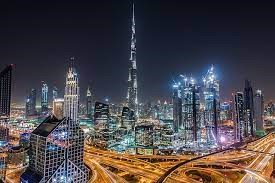
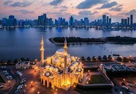
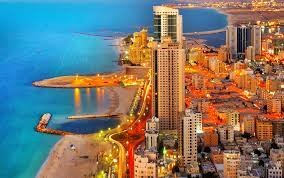
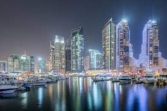
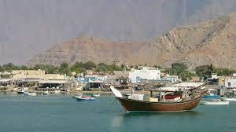
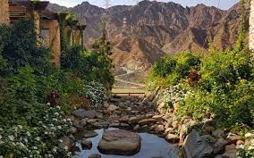

Abu Dhabi is the capital of the United Arab Emirates. It is also the capital of the Emirate of Abu Dhabi and the centre of the Abu Dhabi Metropolitan Area.

Dubai is the most populous city in the United Arab Emirates (UAE) and the capital of the Emirate of Dubai, the most populated of the country's seven areas.

Sharjah is the third-most populous city in the United Arab Emirates, after Dubai and Abu Dhabi. It is the capital of the Emirate of Sharjah and forms part of the Dubai-Sharjah-Ajman metropolitan area.

Ajman is the capital of the emirate of Ajman in the United Arab Emirates. It is the fifth-largest city in UAE after Dubai, Abu Dhabi, Sharjah and Al Ain.

Umm Al Quwain is known for its natural beauty, laid-back vibe and good value hotels which offer up a peaceful weekend break that won't break the bank. Located only an hour or so from Dubai.

Ras Al Khaimah (RAK) is the largest city and capital of the Emirate of Ras Al Khaimah, United Arab Emirates. It is the sixth-largest city in UAE. The emirate is noted for its varied topography, from the Hajar mountains, to rolling sand dunes to 64 kms of beaches, as well as its adventure tourism attractions.

It is the seventh-largest city in UAE, located on the Gulf of Oman (part of the Indian Ocean). It is the only Emirati capital city on the UAE's east coast, Fujairah is known for its beaches and the solitude and relaxation they present